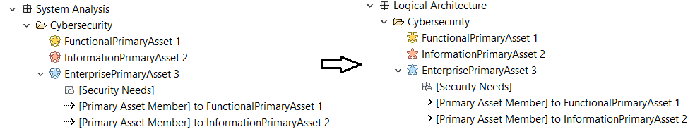

As detailed in the concepts chapter, transition of cybersecurity elements (Threats, Primary Assets) is possible using the Cybersecurity Transition command available in the transitions menu. The example below shows a transition of Functional Primary Assets from the operational level to the system level.

As can be seen in the image below, the transition on Primary Assets will preserve the attributes on the transitioned element and will also trigger the transition of the references (Security Needs, Primary Asset Member, Function Storage).

The behaviour is similar for Information Primary Assets, the only difference being the element type that the Primary Asset Member can reference (Exchange Items vs Functions/Operational Activities).
When transitioning Enterprise Primary Assets, the referenced Primary Assets are also transitioned:

|
|
To be noted that due to the Threat Application extension a Threat that is "Applicable To" another Primary Asset will also transition that Primary Asset. |